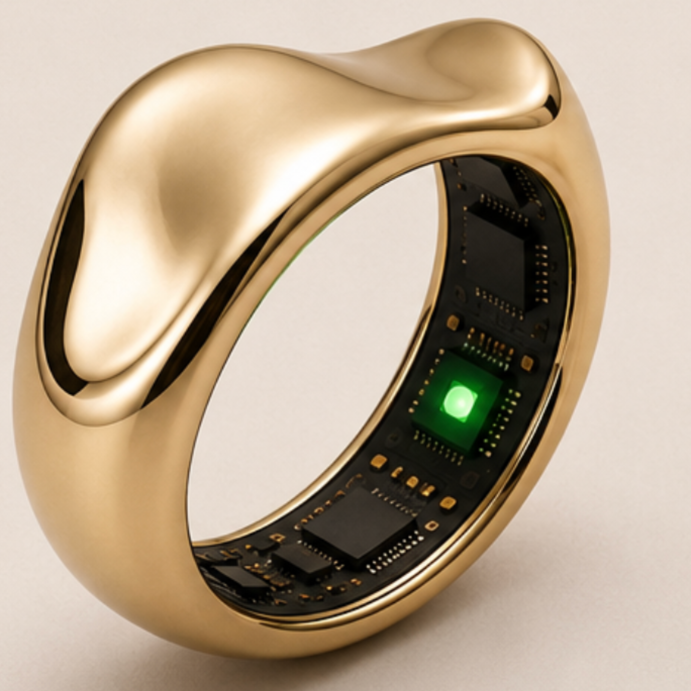

Anticipe. Apaise.
La première bague joaillière qui détecte et calme les bouffées de chaleur sans médicament, en temps réel.

Détecter
Analyse continue et invisible des biomarqueurs via nos capteurs de grade médical intégrés sous le verre saphir.
Refroidir
Activation instantanée d'une fraîcheur localisée pour induire une vasoconstriction réflexe et freiner la montée thermique.
Apaiser
Micro-vibrations rythmiques guidant la respiration vers la cohérence cardiaque pour basculer le système nerveux en mode parasympathique.